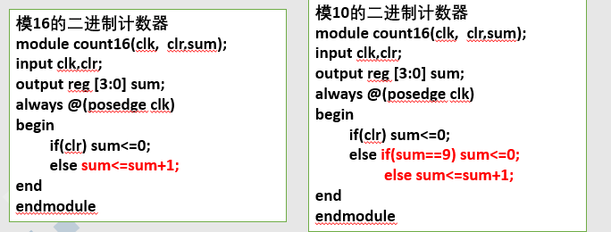
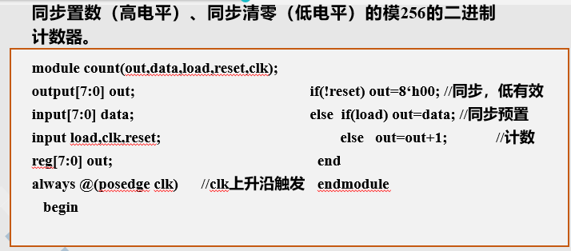

1、 考试时间：12 月 13 日，14：00-16：00，微 301
2、 考试注意事项：
（1）携带学生证或者打印证明
（2）开卷，只能携带纸质材料
3、 考试内容范围：仅考察 verilog 语法、程序设计相关内容。
4、 考试题型：
（1） 选择题 10 题，20 分；
（2） 程序阅读（补齐代码）4-5 段代码，15 空，共 30 分。
（3） 编程题 4 题，共 50 分。
5、 考试重点：
在一个模块（module）中：
initial语句常用于仿真中的初始化，always可用于仿真和可综合电路
initial过程块中的语句仅执行一次，always块内的语句则是不断重复执行的
使用 initia和 always语句的次数是不受限制的。
x1格式：2always@(<敏感信号表达式eventexpression>)3 begin4 xxxxxxxxxxxxxxxxxxxxxxxxxxxxxxx5 xxxxxxxxxxxxxxxxxxxxxxxxxxxxxxx6 end7//“always”过程语句通常是带有触发条件的，触发条件写在敏感信号表达式中，只有当触发条件满足时， “begin-end”块语句才能被执行。89always@(a) //当信号a的值发生改变10always @(a ，b) //当信号a或信号b的值发生改变11always @或@（） //所有驱动信号12出现在敏感列表中的使能信号，都是异步信号，不出现是同步；
异步使能信号，posedge对应高电平有效，negedge对应低电平有效。
非阻塞（non_blocking）赋值方式 •赋值符号为“<=”， 如：b<= a；
非阻塞赋值在整个过程块结束时才完成赋值操作，即b的值并不是立刻就改变的。
阻塞（blocking）赋值方式 •赋值符号为“=”， 如：b= a；
阻塞赋值在该语句结束时就立即完成赋值操作，即b的值在该条语句结束后立刻改变。
组合逻辑使用阻塞赋值“=”； 时序使用非阻塞“<=”；
函数
xxxxxxxxxx211function<返回值位宽或类型说明>函数名；2端口声明；3局部变量定义；4其它语句。5endfunction6789function[7:0] get0;10input[7:0] x; reg[7:0] count;11integer i;12begin 13 count0;14 for (i0;i<7;ii1)15 if(x[i]1'b0) countcount1;16 get0count;//函数必须对函数名赋值17end18endfunction1920//调用21aget0(8'b00001111);
带优先级的数据选择器、
xxxxxxxxxx141module mux_casez(out,a,b,c,d,sel);2 input a,b,c,d;3 input[3:0] sel;4 output reg out;5 always@(a or b or c or d or sel) 6 begin7 casez(sel)8 4’b1:outa;9 4’b10:outb;10 4’b100:outc;11 4’b1000:outd;12 default:out1’bx;13 endcase14 end


以8位全加器为例
xxxxxxxxxx201//两级流水线2module add2(cout,sum,ina,inb,cin,clk);3 input[7:0] ina,inb;4 input cin,clk;//接收上一级进位,clk5 output reg[7:0] sum;6 output reg cout;7 reg[3:0] ta,tb,f3210;8 reg fjin;9 always@(posedge clk)10 begin11 {fjin,f3210}ina[3:0]inb[3:0]cin;//计算后四位，并且保留进位12 taina[7:4];//锁存高四位，留着下一个clk运算13 tbinb[7:4];14 end15 always@(posedge clk)16 begin17 sum[3:0]f3210;//取过来低四位18 {cout,fjin}tatbfjin;//运算高四位19 end20endmodulexxxxxxxxxx311module pipeline(cout,sum,ina,inb,cin,clk);2 output[7:0] sum;3 output cout;4 input[7:0] ina,inb;5 input cin,clk; 6 reg[7:0] tempa,tempb,sum;7 reg tempci,firstco,secondco,thirdco, cout;8 reg[1:0] firsts, thirda,thirdb;9 reg[3:0] seconda, secondb, seconds; 10 reg[5:0] firsta, firstb, thirds;11 always @(posedge clk)12 begin tempaina; tempbinb; tempcicin; 13 end //输入数据缓存14 always @(posedge clk)15 begin {firstco,firsts}tempa[1:0]tempb[1:0]tempci; //第一级加（低2位）16 firstatempa[7:2]; firstbtempb[7:2]; 17 end//未参加计算的数据缓存18 always @(posedge clk)19 begin {secondco,seconds}{firsta[1:0]firstb[1:0]firstco,firsts}; 20 secondafirsta[5:2]; secondbfirstb[5:2]; 21 end //数据缓存22 always @(posedge clk)23 begin {thirdco,thirds}{seconda[1:0]secondb[1:0]secondco,seconds};24 thirdaseconda[3:2];thirdbsecondb[3:2]; 25 end //数据缓存26 always @(posedge clk)27 begin 28 {cout,sum}{thirda[1:0]thirdb[1:0]thirdco,thirds}; //第四级加（高两位相加）29 end 30endmodule31
xxxxxxxxxx261//三段式模5计数器2module fsm(clk,clr,cout)3 input clk,clr;4 output reg[3:0] cout;5 reg[3:0] state,nextstate;6 always@(posedge clk,posedge clr)//修改现在的状态7 begin8 if(clr) state<3'b000;9 else state<nextstate;10 end11 always@(state)//修改次态12 begin13 case(state)14 3'b000:nextstate<3'b001;15 3'b001:nextstate<3'b010;16 3'b010:nextstate<3'b011;17 3'b011:nextstate<3'b100;18 3'b100:nextstate<3'b000;19 default:nextstate<3'b000;20 endcase21 end22 always@(state)//修改输出23 begin24 coutstate;25 end26endmodule
xxxxxxxxxx161//七裁判电路的测试2`timescale 1ps1ps3module test4 reg out;5 reg[6:0] i0;6 main obj(i[0],i[1],reg[2],i[3],i[4],i[5],i[6]);7 initial8 begin9 for(i0;i<127;i)10 begin11 #100;12 end13 end14 initial15 (xxxxxxxxxxxxxxxxxxxxxxxxxxxxxxxxxxxxxxxxxx)16endmodule